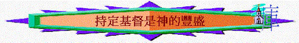

D.持定元首---持定基督是神的豐盛(2:8-3:4)
引言：一想起豐盛，你會想起什麼？今日人以為什麼是豐盛？在那裡可找到？
一．豐盛之源頭
1.
2:8保羅對信徒有什麼提醒？何謂「理學」「虛空的妄言」「人間的遺傳」「世上的小學」？
2.真正的豐盛在那裡可得到？2:9為何題「有形有質的」？基督擁有什麼是世間的理學不能比較？(2:9)
3.歌羅西信徒已得到嗎？何以見得？
4.你認為自己已得著神的豐盛嗎？為什麼？
二．豐盛的內容
1.2:11題及割禮，舊約的割禮是什麼意思？「不是人手所行的割禮」又是什麼意思？我們因基督可以怎樣？（2:11）
2.2:13-14又題及因主神又怎樣對我們？「又塗抹了在律例上所寫攻擊我們，有礙於我們的字據，把他撤去」是什麼意思？
3.2:15題及我們得勝因為什麼？為什麼？沒有此關鍵，我們會有什麼後果？
4.試分享你因主得勝的經歷？
5.既然信徒已靠主得勝罪惡，所以他們再不要走回什麼光景？走回有什麼危險？舊日的方式是否可以使我們得勝？為什麼？（2:16-21）
6.除了我們已與主同死外，3:1題及我們更與主怎樣？何謂「與基督一同復活」？
7.3:1-3
描述我們同主的關係是怎樣？今生與將來的關係又如何？
8.3:1題及「當求在上面的事」是什麼意思？「求」是什麼意思？「上面的事」是指什麼？相反的又是什麼事？為什麼要求？同我們與主一同復活有什麼關係？
9.你未信前多追求什麼事？現今又如何？